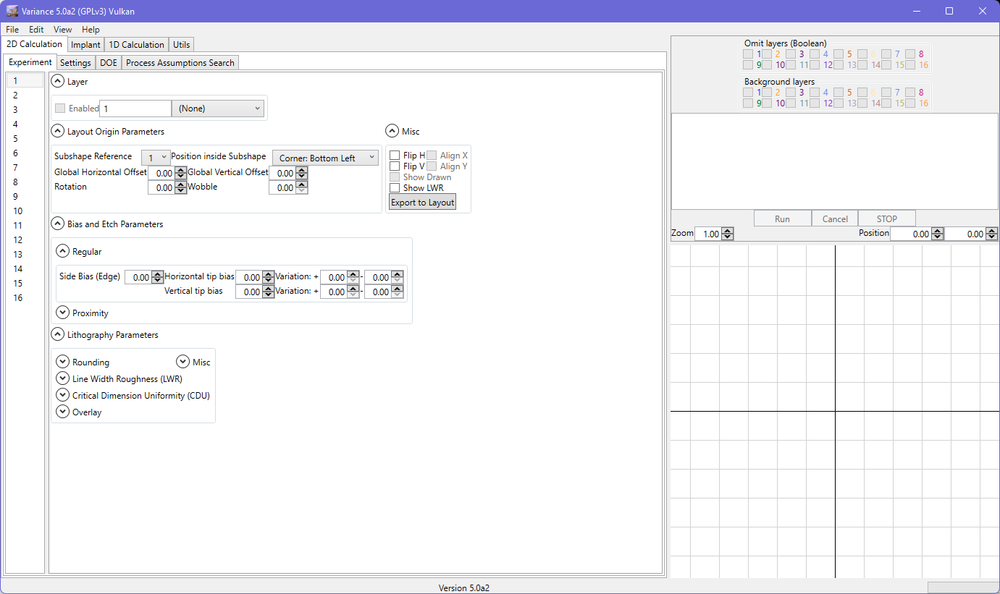
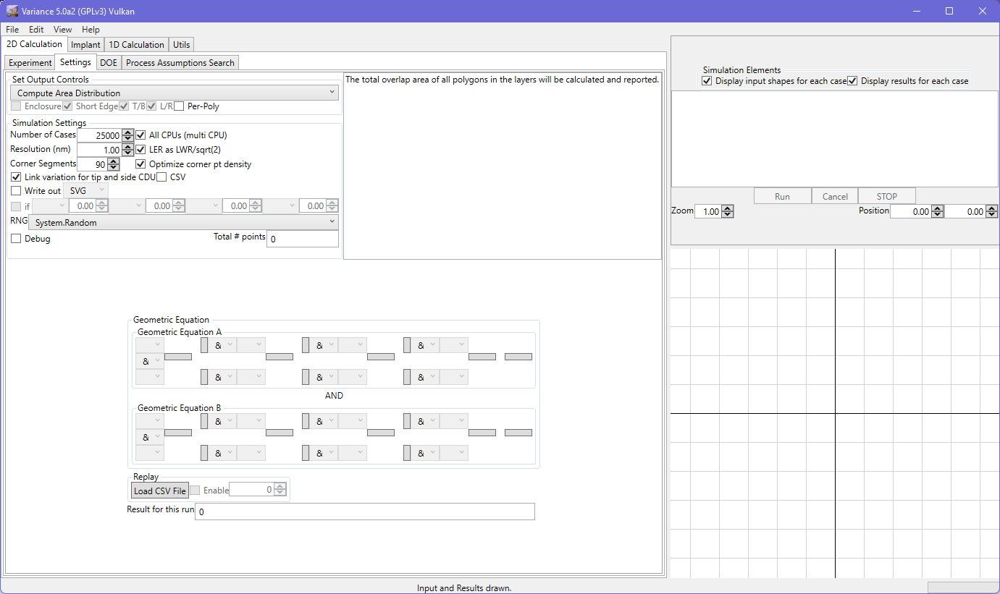
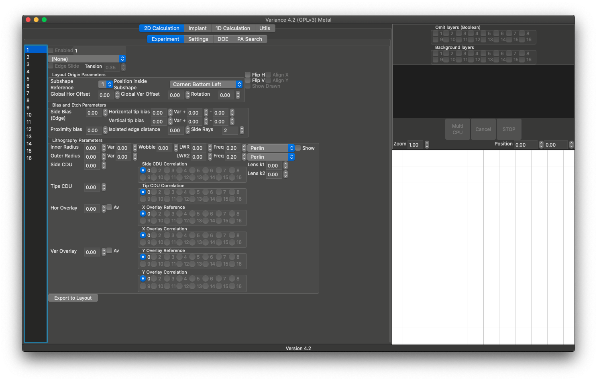
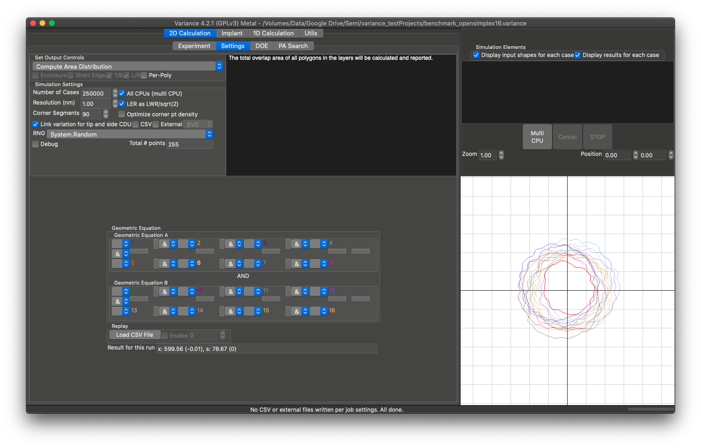
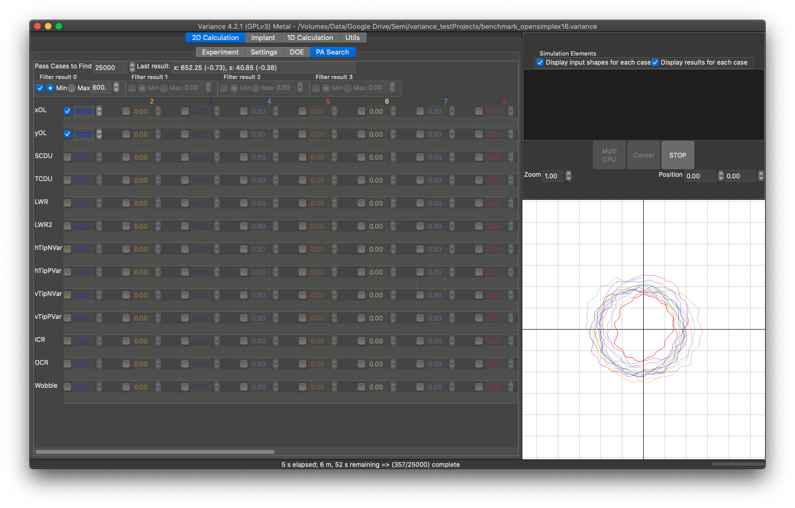
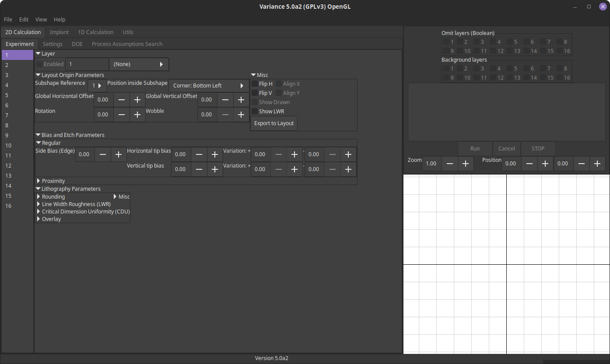
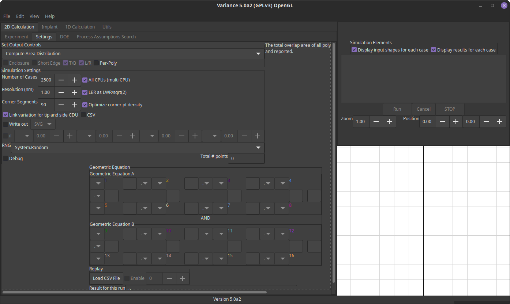

This is used to provide a UI from a common code-base for the tool. The images below are indicative of the user interface, with some notes about issues/limitations where applicable.
WPF
Known issues:
- None.
  Mac
Known issues:
- The Mac build is currently Intel-only. M1 porting is pending hardware.
- This has comparable performance to Windows (within 10%) following the move to use .NET Core 3.1.
   GTK
Known issues:
- The user interface under GTK has some large buttons and occasional layout refresh bugs that do not impair use of the tool.
- This has comparable performance to Windows (within 10%) following the move to use .NET Core 3.1.
- nVidia driver bugs cause the tool to crash on launch for OpenGL. Vulkan is fine. AMD and Intel hardware is not affected.
 
The headless executable runs in a console and suits systems with no compatible GUI system. It expects a project file as an argument. This project file will be loaded and the simulation evaluated without further action. Output will be to a CSV file named after the project file. Memory usage is slightly lower and simulations run in ~10% less time due to reduced overhead.
- --1thread : specifics only a single thread should be used.
- --implant : lets the tool know the project file should be used to run an implant simulation.
- --email (file) : reads email settings from the file specified.
- --emailPerJob : tells system to send email per job (requires valid configuration from --email).
- --emailOnCompletion : tells system to send email per batch (requires valid configuration from --email).
Email Configuration
The headless system supports email notification. Configuration is through a mix of commandline arguments and a text file-based list of settings. The settings text file is to be specified as a parameter to the --email argument and should be of the form below. If ssl is omitted, a secure email connection will not be used. A configuration file is used to avoid parameters being observable in the process list of the host system (e.g. the password).
address : myemail@gmail.com
password : mypassword
server: smtp.gmail.com
port: 785
ssl